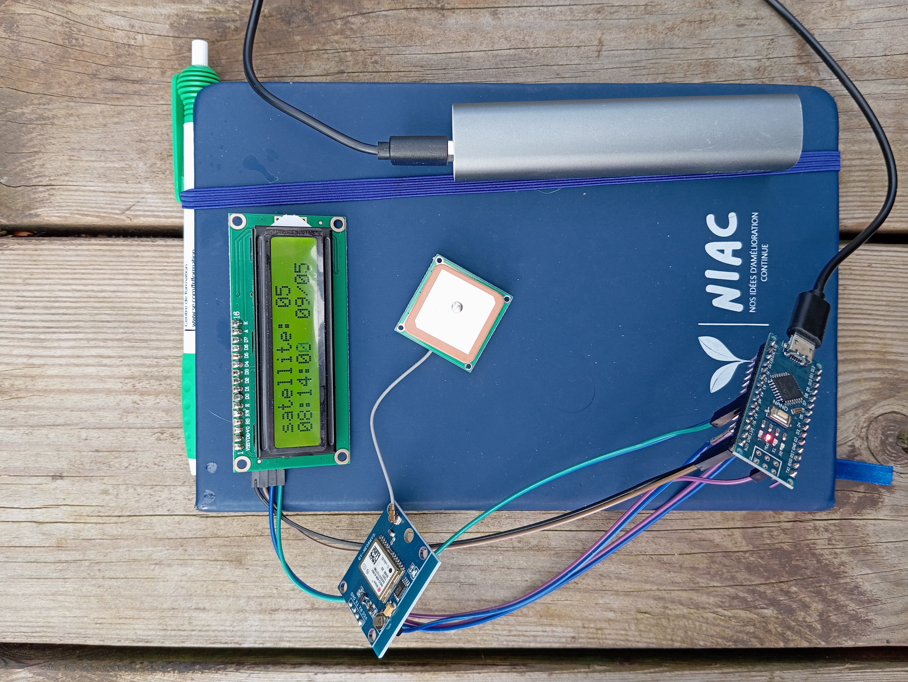
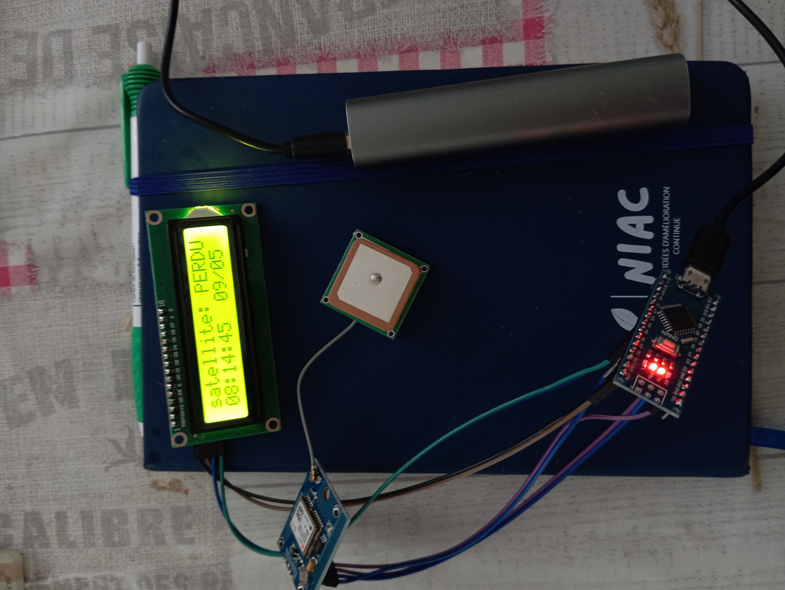
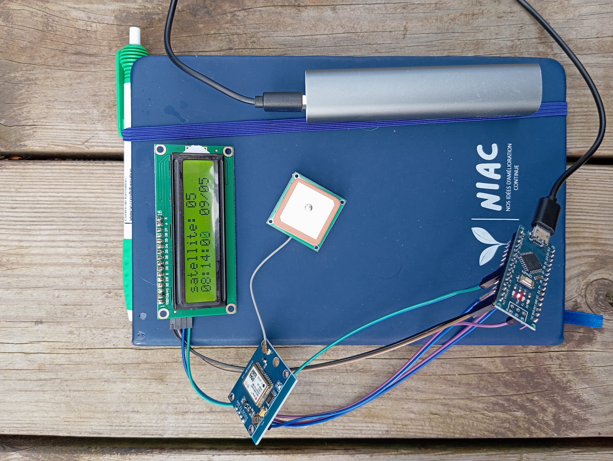
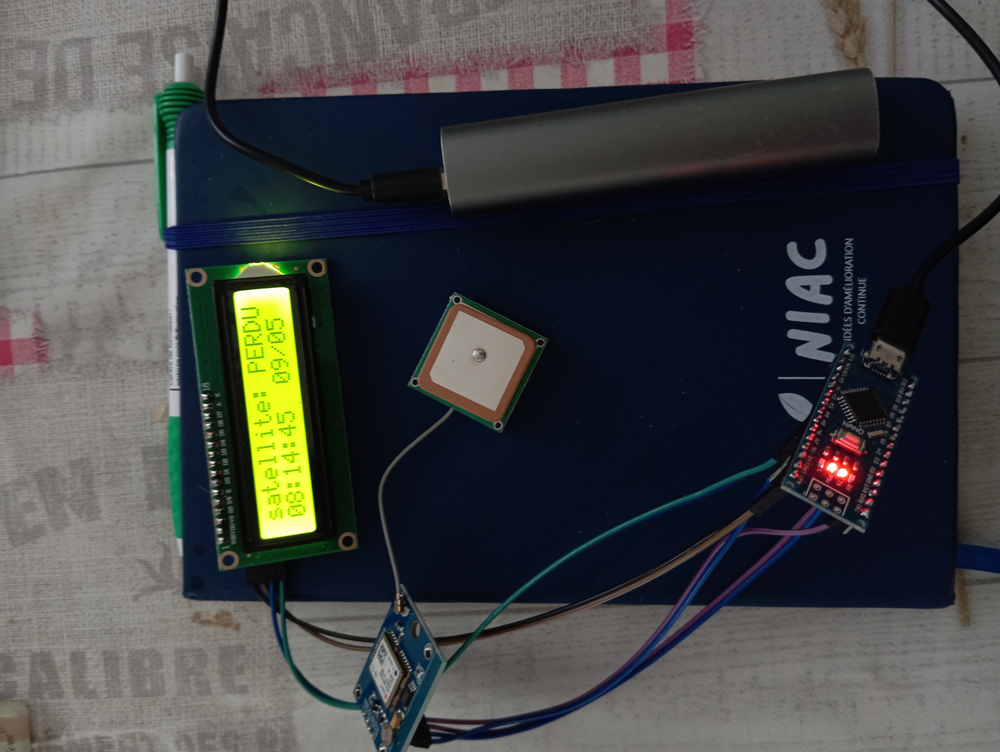

L’heure exacte, où que vous soyez.
Compacte, robuste, et pensée pour l’industrie, cette horloge GPS est le compagnon idéal des systèmes automatisés qui ont besoin de parler le même langage temporel. Synchronisation fiable, indépendance totale, précision à la microseconde près. Pas de dérive, pas d’excuse. Juste l’heure, la bonne.
Le déclic est venu d’une intervention sur une vieille horloge grande onde. Un matériel fatigué, obsolète, et capricieux. Elle peinait à garder le cap, et il devenait de plus en plus difficile de trouver des pièces ou de garantir sa fiabilité.
C’est là qu’un collègue m’a soufflé l’idée : « Pourquoi pas une horloge GPS ? » Plus moderne, plus précise, plus autonome. J’ai creusé, et rapidement, la logique s’est imposée.
J’ai donc décidé de concevoir une horloge GPS pensée pour l’industrie : simple, robuste, lisible. Pas un gadget, mais un vrai outil de synchronisation, capable de remplacer ces anciennes horloges sans rien sacrifier à la fiabilité. Une réponse concrète à un besoin terrain, avec les technologies d’aujourd’hui.
🛰️ Synchronisation GPS ultra précise
L’horloge capte les signaux satellites pour se caler sur le temps universel. Elle s’ajuste automatiquement, corrige les dérives et vous offre une précision redoutable, sans intervention humaine.
📟 Affichage instantané
Heure UTC, format 24 h, date et nombre de satellites perçus. L’écran affiche les infos essentielles. L’interface minimaliste, pensée pour être lisible même en plein soleil, fait le job sans détour.
🕹️ Sorties TTL et liaison série
Que ce soit pour surveiller un réservoir à distance, collecter des données climatiques dans un champ, ou étendre un réseau de capteurs dans une usine, cette solution offre une base robuste, fiable et flexible.
💾 Autonomie totale
Alimentée en 5V ou 12V, sans réseau, sans Wi-Fi, sans PC. C’est un bloc qui tourne seul. Un bloc fiable. Une boussole temporelle que rien n’arrête.
🛠️ Mode secouru intégré
En cas de perte du signal GPS, l’horloge ne se démonte pas. Une horloge interne prend le relais et assure la continuité de l’horodatage jusqu’à la récupération du signal. Moins de coupures, plus de confiance.
 



Dans l’industrie, le temps c’est plus qu’un chiffre : c’est un repère. Sans synchronisation fiable, c’est tout un système qui peut tomber dans le flou. Avec cette horloge, j’ai voulu créer un outil simple, stable, et sans dépendance.
Pas besoin d’un serveur temps, pas besoin d’un PC. Cette horloge dit l’heure, elle dit toujours la même chose, et elle le dit avec la précision d’un satellite. C’est un outil de confiance. Un point fixe dans la jungle des diagnostics incertains.
« Quand chaque seconde compte, cette horloge te les rend exactes. »